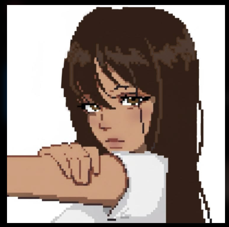
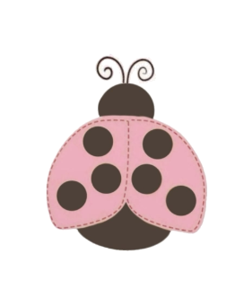

Pulin
Cadastro GamificadoPlataforma de cadastro gamificado, com etapas estruturadas e sistema dinâmico de recompensas. O usuário pode desbloquear moedas e um avatar exclusivo ao concluir o cadastro.
Olá! Sou estudante do curso Técnico em Informática na Raphael Di Santo (Campinas–SP) e atuo como assistente jurídica. Uma pessoa curiosa, criativa e comunicativa explorando o mundo da tecnologia para criar experiências autênticas e cheias de identidade.



estudante, criativa e curiosa pelo universo da tecnologia
Olá! Meu nome é Yasmin Ramos. Sou estudante do curso Técnico em Informática na escola Raphael Di Santo, em Campinas – SP.
Sou uma pessoa curiosa, criativa, comunicativa e determinada. Tenho paixão genuína por aprender coisas novas, debater ideias com diferentes perspectivas, colaborar de maneira ativa em equipe e assumir responsabilidades e desafios com entusiasmo.
Acredito que a tecnologia se torna verdadeiramente fascinante quando conecta empatia, criatividade visual e funcionalidade prática. Cada linha de código e projeto que desenvolvo reflete essa busca por autenticidade e propósito.
empresa de créditos estressados
Atuo na atualização cuidadosa de informações e dados em sistemas corporativos internos e na elaboração de Instrumentos de Trabalho (ITs). Uma rotina dinâmica que desenvolve diariamente minha organização meticulosa, processos estruturados, comunicação interpessoal e responsabilidade com entregas.
áreas que mais me encantam na TI
espaço onde ideias ganham vida em código, gamificação e jogos
Plataforma de cadastro gamificado, com etapas estruturadas e sistema dinâmico de recompensas. O usuário pode desbloquear moedas e um avatar exclusivo ao concluir o cadastro.
Jogo dinâmico chamado Destruidor de Números, com progressão por fases, pontuação em tempo real, moedas, ranking competitivo, conquistas desbloqueáveis e loja de itens.
novos projetos, experimentos e códigos estão sendo criados para preencher esse espaço ♡
fique à vontade para me mandar uma mensagem ou acompanhar meus códigos